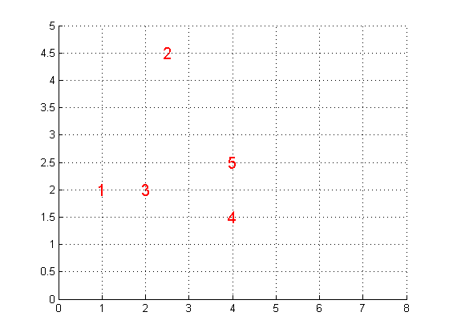

Agglomerative Clustering Demo
requireStatsToolbox
if 0
X = [1 3;
1 4;
5 2;
5 1;
2 2;
7 2];
end
X = [1 2;2.5 4.5;2 2;4 1.5;4 2.5]
figure;
axis on
grid on
N = size(X,1);
for i=1:N
hold on
h=text(X(i,1)-0.1, X(i,2), sprintf('%d', i));
set(h,'fontsize',15,'color','r')
end
axis([0 8 0 5])
Y= pdist(X);
Z = linkage(Y);
dendrogram(Z)
c = cophenet(Z,Y)
Y = pdist(X,'cityblock');
Z = linkage(Y,'average');
c = cophenet(Z,Y)
X =
1.000000000000000 2.000000000000000
2.500000000000000 4.500000000000000
2.000000000000000 2.000000000000000
4.000000000000000 1.500000000000000
4.000000000000000 2.500000000000000
c =
0.861543061903014
c =
0.904736639634305
